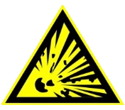

ВАЖНО
ОПИСАНИЕ СИМВОЛОВ
| Информация, необходимая для правильной эксплуатации пылеуловителя | |
| Важные инструкции, соблюдение которых необходимо для обеспечения безаварийной работы оборудования | |

|
Важные предупреждающие сообщения, способствующие предотвращению травм и значительного ущерба |

|
Предостережение о наличии подвешенного груза |
|  | Предостережение об опасности возникновения взрыва |

|
Предостережение о наличии электрического напряжения |
ОПИСАНИЕ
Назначение и использование
Фильтр воздушный типа ZEO-FCS предназначен для очистки запыленного воздуха предприятий элеваторной, комбикормовой и мукомольной промышленности. Данный фильтр относится к классу централизованной аспирации. Применяется для обеспыливания мест пересыпок зерна (насыпные лотки, сбрасывающие коробки конвейеров, разгрузочные тележки, башмаки норий и т.д.) непосредственно в месте возникновения пыли.
Принцип работы
Принцип работы фильтра основан на улавливании пыли, путем комбинирования центробежного эффекта осаждения крупных частиц пыли и тонкой очистки рукавного фильтра в одном корпусе. При помощи вентилятора создается разряжение в камере очищенного воздуха.
Тангенциальный вход направляет входящий поток по образующей поверхности цилиндрического корпуса фильтра. При таком вводе создается вращательное движение пылевоздушной смеси и на частицы начинают действовать центробежные и инерционные силы. Крупные частицы смеси теряют скорость и скатываются вниз в сборный конус. Оставшаяся мелкодисперсная пыль поступает на вторую стадию очистки - фильтровальные элементы. Из-за разряжения в камере очищенного воздуха, пыль оседает на фильтровальных мешках, происходит отделение твердой фазы (пыли) из очищаемого воздуха. Пыль остается на поверхности и в порах фильтрующих рукавов, в то время как очищенный газ проходит сквозь фильтрующие элементы и попадает в камеру очищенного воздуха. Очищенный воздух выходит из корпуса фильтра через патрубок выхода.
Основные элементы конструкции фильтра ZEO-FCS представлены на (Рис.1):
Фильтр типа ZEO-FCS предназначен для очистки сухих воздушных потоков от различных видов не слипающейся и не волокнистой мелко-среднедисперсной пыли. Необходимо соблюдать указанные производителем условия ввода в эксплуатацию, а также условия эксплуатации и технического обслуживания. Эксплуатация должна производиться исключительно специалистами.
- Пылеуловители для применения внутри помещений = IP50.
- Пылеуловители для применения снаружи помещений = IP54.
- Обслуживание узлов, являющихся потенциальными источниками воспламенения.
- Подъем и монтаж.
- Электромонтаж, осмотры и обслуживание.
- Осмотры и обслуживание системы сжатого воздуха.
- Работы во внутренних помещениях с потенциально взрывоопасной атмосферой при наличии риска взрыва.
В ходе сборочных/монтажных работ и при разборке могут возникать источники воспламенения, которые не были учтены при проработке рисков работающего пылеуловителя (например, зачистка метала, искры при сварке и т.п.)
ВВОД В ЭКСПЛУАТАЦИЮ
Фильтры ZEO-FCS транспортируются автомобильным транспортом в соответствии с правилами перевозки грузов, установленными для данного вида транспорта.
Перед выгрузкой
- Обеспечить свободное пространство для установки транспортировочной рамы.
Разгрузочные устройства
- Погрузчик или подъемный кран с соответствующей грузоподъемностью.
- Строповочные петли или двойные подвески соответствующей грузоподъемности.
- Разгрузочные устройства разрешается использовать только квалифицированному персоналу.
Повреждения при транспортировке
При наличии повреждения поставляемого оборудования при транспортировке необходимо выполнить следующие действия:
- Укажите повреждения в накладной, водитель должен подтвердить их наличие.
- Немедленно письменно оповестите транспортную фирму и производителя/поставщика. Проверьте содержимое доставленного груза по накладной, которая прилагается к транспортным бумагам.
Условия хранения
При выборе места складирования устройства обратите внимание на то, чтобы:
- не возникло повреждений от транспорта (строительного) или неаккуратно выполненной работы;
- не возникло загрязнений от брызг раствора или цемента;
- не попали искры при шлифовальных работах и т.п.;
- был обеспечен температурный режим от -5°C до 50°C без резких перепадов;
- была обеспечена относительная влажность воздуха менее 60%;
- избежать близости устройства к агрессивным средам, вызывающим коррозию (кислоты, щелочи, соли и др.).
Общие указания по подъему оборудования
Требования к сжатому воздуху
Для работы пылеуловителей ZEO-FCS требуется подача чистого сжатого воздуха от отдельной системы, без примесей влаги и масла. На каждом коллекторе закреплена табличка с указанием рабочего и максимально допустимого давления. При использовании существующей заводской системы подачи сжатого воздуха может потребоваться установить дополнительный сепаратор влаги в линию подачи воздуха к пылеуловителю. При использовании отдельного компрессора для подачи воздуха на пылеуловитель следует выполнить в максимально возможной степени приведенные ниже условия. Завод-изготовитель гарантирует бесперебойную эксплуатацию фильтра при условии соответствия воздуха классу 3 по ISO 8573-1.
Тип компрессора
Вследствие того, что при работе компрессора с перегрузкой повышается степень загрязненности воздуха и содержание влаги в сжатом воздухе, компрессор должен иметь большой запас по производительности.
Место установки воздухозаборника компрессора
Не устанавливайте воздухозаборник компрессора в сильно загрязненной зоне. Оснастите компрессор воздушным фильтром достаточной пропускной способности. По возможности, воздухозаборник компрессора должен быть расположен на северной стороне здания, так как свежий воздух на северной стороне обычно более холодный и плотный, и, следовательно, содержит меньше влаги. При расположении предприятия к югу от экватора следует устанавливать воздухозаборник с южной стороны, соответственно.
Компоновка и монтаж воздухопроводов
Протяженность трубопровода сжатого воздуха между компрессором и пылеуловителем должна быть достаточно большой, чтобы обеспечить охлаждение воздуха после сжатия в компрессоре. Типичная длина трубопровода для небольших установок составляет 10 м (30 футов) при диаметре 12 мм (Ду 1/2 дюйма). При прокладке трубопровода следует предусмотреть уклон в сторону направления потока воздуха для дренирования конденсата. В самой нижней точке линии необходимо установить сепаратор влаги. Схема подключения сжатого воздуха к коллектору пылеуловителя и отвода из него влаги показана на (рис.3).

Предохранительный клапан
Предохранительный клапан используется для установки максимального давления воздуха в закрытых контурах.
Оптимальное рабочее давление коллектора сжатого воздуха указано в разделе «Технические данные ZEO-FCS». Необходимо предпринять соответствующие меры, чтобы не допустить превышения этого значения. Если предохранительный клапан поставляется компанией ООО «ЗЭО», то этот клапан устанавливается на давление срабатывания 6,1 бар. Если производительность подачи воздуха превышает расход воздуха через клапан, необходимо предусмотреть установку дополнительного клапана.
Указания по монтажу
Клапан должен монтироваться таким образом, чтобы регулировочный винт находился наверху в вертикальном положении.
Площадь сечения отводной трубы должна быть не меньше двойной площади сечения седла предохранительного клапана (п.8.12 СНиП П-35-76).
Устройство запорных устройств на подводящем к клапану трубопроводе не допускается.
Клапан должен устанавливаться на расстоянии не более чем 1 м от защищаемого агрегата.
Отводящий от клапана трубопровод должен иметь устройство для разрыва струи.
При расположении на одном патрубке нескольких предохранительных патрубков, площадь поперечного сечения патрубка должна быть не менее 1,25 суммарной площади сечения седел клапанов.
Отбор рабочей среды от патрубков и участков, подводящих к клапану трубопроводов, не допускается.
Указания по эксплуатации и техническому обслуживанию
Настройка клапана на необходимое давление срабатывания производится на гидравлическом стенде или на смонтированной системе при ее опрессовке. При этом срабатывание клапана необходимо проверить не менее 5 раз. Настроечное положение регулировочной втулки фиксируется затяжкой контрящей гайки. После затяжки гайки необходимо повторно произвести испытание клапана на срабатывание. В связи с изменениями физических свойств пружины с течением времени, перенастройку клапана следует проводить не реже, чем через 12 месяцев.
Для принудительного открытия клапана («продувки») необходимо рожковым ключом соответствующего размера повернуть на 1/4 оборота втулку принудительного открытия. При этом следует принять меры против того, чтобы рабочая среда не вызвала термического воздействия на работника, окружающий персонал и электропроводку.
Возможные неисправности и способы их устранения
| Неисправность | Причина | Способ устранения |
| При снятом регулировочном винте клапан срабатывает на давление, более 1 бар | Пружина клапана не соответствует расчетным характеристикам | Заменить пружину |
| При настройке клапан срабатывает каждый раз на новое давление | Попадание механических частиц под прокладку золотника | Разобрать клапан. Очистить седло золотника |
Монтаж и подключение блока управления
Подключение блока управления осуществляется согласно схеме электрической принципиальной (см. приложение 3 в разделе «Приложения»).
Потребность в производственной площади
Необходимо обеспечить достаточное пространство для эксплуатации и технического обслуживания вокруг ZEO-FCS еще во время проектирования здания или реконструкции. На месте установки фильтра должна быть обеспечена возможность беспрепятственной замены фильтровальных рукавов и остального навесного оборудования. Так как замена рукавов производится со стороны камеры очищенного воздуха, зона обслуживания устанавливается габаритным размером фильтра включая, дополнительно, длину фильтровального элемента. Габаритные размеры фильтра ZEO-FCS и зоны его обслуживания показаны в приложении 1 и приложении 2 (см. раздел «Приложения»)
Заземление от действия статического электричества
Если пылеуловитель имеет точку присоединения заземления (точка обозначена соответствующим символом), необходимо обязательно подключить такой разъем к системе заземления с помощью комплектного крепежа для предотвращения накопления статических зарядов.
Контрольный перечень монтажных работ
- Проверьте надежность болтовых соединений крепления пылеуловителя к опорной конструкции.
- Проверьте надежность болтовых соединений крепления опорной конструкции к полу.
- Проверьте правильность подключения подачи сжатого воздуха и отсутствие утечек.
- Проверьте правильность подключения электропитания и соответствие местным нормам монтажа электроустановок.
Контрольный перечень работ при вводе в эксплуатацию
- Проверьте надежность болтовых соединений крепления пылеуловителя к опорной конструкции.
- Проверьте надежность болтовых соединений крепления опорной конструкции к полу.
- Убедитесь в том, что все воздуховоды присоединены и все съемные панели установлены на место.
- Проверьте надежность подключения штыря заземления к системе заземления (если предусмотрено).
- При установленных взрывных панелях убедитесь в том, что выброс давления будет направлен в безопасную зону.
- Откройте смотровой люк (люки), убедитесь в том, что уплотнения люка не повреждены, затем закройте люк (люки) и закрепите в закрытом положении.
- Убедитесь в том, что напряжение и частота питания на контроллере соответствует номинальным параметрам. В случае применения источника постоянного тока напряжением 24V DC проверьте полярность. Контроллер должен иметь заземление при работе как на постоянном, так и на переменном токе.
- Проверьте наличие напряжения питания в сети.
- Убедитесь в том, что на коллекторе установлен предохранительный клапан, проверьте давление срабатывания клапана.
- Включите компрессор, проверьте соответствие давления в системе сжатого воздуха рекомендованному значению. Если необходимо, запустите оборудование для удаления пыли (например, винтовой конвейер, барабанный питатель, ленточные транспортеры и проч.).
- Включите контроллер, убедитесь в том, что все клапаны работают в правильной последовательности (по звуку при выпуске воздуха). При открытии каждого из клапанов давление воздуха должно снизиться приблизительно на 30-40% от начального значения, после чего вернуться к прежнему значению.
- Запустите основной вентилятор (если имеется) и проверьте правильность вращения, убедитесь в том, что ток в цепи вентилятора при полной нагрузке не превышает установленного значения (направление вращения вентилятора указано на задней панели корпуса вентилятора).
- Проверьте надлежащую работу системы блокировок и звуковую систему сигнализации (если имеется).
Если одна из клеток выше осталась незаполненной, проверьте причины невыполнения требования. Используйте таблицу поиска неисправностей в разделе “Техническое обслуживание».
Последовательность пуска
Оборудование можно ввести в эксплуатацию при условии успешного завершения всех необходимых проверок.
- Включите подачу сжатого воздуха и настройте фильтррегулятор на давление 3-5 бар.
- Запустите оборудование, обслуживаемое пылеуловителем.
- Включите оборудование для удаления пыли (если имеется).
- Включите контроллер.
- Включите основной вентилятор.
Последовательность останова
После завершения определенного периода эксплуатации критически важно удалить все остатки отложений пыли из фильтрующих элементов корпуса, разгрузочного переходного патрубка и оборудования,которое обслуживает пылеуловитель. Для этого следует соблюдать определенную последовательность останова оборудования:
-
Отключите только основной вентилятор, при этом оставьте включенными контроллер и подачу сжатого воздуха.
После работы в течение 10-15 минут в указанном режиме, отключите контроллер и компрессор, но оставьте включенным оборудование для удаления пыли, чтобы гарантировать полную очистку устройства. - Подождите еще 5 минут, затем отключите оборудование для удаления пыли (если имеется).
Для установок с относительно коротким впускным воздуховодом данная процедура может привести к выбросу пыли на впуске, и, таким образом, не может считаться безопасной, если удаляемая пыль обладает опасными свойствами. Следовательно, необходимо провести оценку степени риска для обеспечения безопасного проведения заключительной процедуры.
ТЕХНИЧЕСКОЕ ОБСЛУЖИВАНИЕ И УХОД
Принцип работы
Принцип работы фильтра основан на улавливании пыли, путем комбинирования центробежного эффекта осаждения крупных частиц пыли и тонкой очистки рукавного фильтра в одном корпусе (Рис.6а). При помощи вентилятора создается разряжение в камере очищенного воздуха.
Тангенциальный вход направляет входящий поток по образующей поверхности цилиндрического корпуса фильтра. При таком вводе создается вращательное движение пылевоздушной смеси и на частицы начинают действовать центробежные и инерционные силы. Крупные частицы смеси теряют скорость и скатываются вниз в сборный конус. Оставшаяся мелкодисперсная пыль поступает на вторую стадию очистки - фильтровальные элементы. Из-за разряжения в камере очищенного воздуха, пыль оседает на фильтровальных мешках, происходит отделение твердой фазы (пыли) из очищаемого воздуха (Рис.6б). Пыль остается на поверхности и в порах фильтрующих рукавов, в то время как очищенный газ проходит сквозь фильтрующие элементы и попадает в камеру очищенного воздуха. Очищенный воздух выходит из корпуса фильтра через патрубок выхода.
Благодаря полностью автоматической системе очистки установки, рукава фильтра эффективно очищаются (Рис.6в) краткими пневматическими импульсами, тактовое управление которых может осуществляться, в зависимости от настроек, по времени или от перепада давлений. После цикла очистки фильтр выходит на первоначальные рабочие характеристики.
Сброс пыли
Особое внимание обращается во время обслуживания и замены узлов на обеспечение расчетного уровня безопасности. При замене рабочих колес вентилятора не допускается трение деталей друг о друга (во избежание искрения).
Периодический осмотр
Периодические осмотры проводятся для обеспечения работы пылеуловителя в наиболее оптимальном режиме и снижения времени простоев вследствие отказов оборудования, особенно при работе в составе непрерывного технологического процесса, а также для обеспечения поддержания состояния оборудования на первоначальном уровне.
Любое значительное изменение дифференциального давления на фильтрующих элементах указывает на изменения в режиме эксплуатации и необходимость проведения работ по устранению неисправности. Например, длительный перерыв в подаче сжатого воздуха может привести к образованию чрезмерного слоя пыли на фильтрующих элементах, что вызовет повышение дифференциального давления на элементах.
После устранения неисправности и возобновления подачи сжатого воздуха на продувку эффективность работы фильтрующих элементов обычно восстанавливается. Однако рекомендуется выполнить продувку воздухом при неработающем пылеуловителе в течение 5-10 минут, чтобы удалить накопившийся слой пыли прежде, чем возобновить нормальную работу пылеуловителя.
Падение давления воздуха на фильтрующем элементе можно проверить с помощью U-образного манометра или дифференциального манометра, для чего следует присоединить указанные приборы к точкам отбора давления на корпусе пылеуловителя (Рис. 8). Это даст непрерывную индикацию состояния фильтрующих элементов. Падение давления на фильтрующих элементах отображается на ЖК-дисплее. При работе эксплуатационное сопротивление фильтра может оставаться относительно стабильным, фактическое падение давления зависит от расхода воздуха через фильтрующие элементы и физических характеристик пыли на элементах.
Замена фильтрующих элементов
Замена фильтрующих элементов (рукавов) производится вследствие механических повреждений, а также при потере фильтровальной способности ткани. Для замены фильтровальных рукавов выполните следующие действия (Рис.9):
- Отключите и отсоедините любое оборудование для перемещения воздуха пылеуловителя (например, вентилятор), убедитесь в том, что давление внутри фильтра равно атмосферному.
- Отключите контроллер и подачу сжатого воздуха.
- Открутите болты на крышке камеры очищенного воздуха и снимите крышку.
- Ослабьте фиксирующие болты (1) установочной плиты (2).
- Проверните фланец каркаса (3) по часовой стрелке относительно оси и извлеките его из отверстия установочной плиты.
- Сожмите фиксирующее кольцо(4) и извлеките рукав (5) из отверстия.
- Поместите фильтрующий элемент в герметичный мешок и отправьте на утилизацию.
- Очистите места установки фильтрующих элементов для обеспечения плотной посадки.
- Опустите новый рукав в отверстие адаптера до фиксирующего кольца.
- Сожмите фиксирующее кольцо и крепко прижмите его к краю отверстия.
- Слегка вдавливая кольцо, установите рукав на свою позицию.
- Опустите каркас в фильтрующий элемент.
- Проверните фланец каркаса против часовой стрелки и затяните болты.
Повторите процедуру для всех фильтровальных рукавов, подлежащих замене. После выполнения работ закройте люк камеры очищенного воздуха и зафиксируйте его болтами.
Демонтаж/замена вентиляционного агрегата
Демонтаж
- Отсоедините электрические кабели от распределительной коробки и от электродвигателя.
- Удалите фиксирующие элементы крепления вентиляционного агрегата, расположенные на крышке камеры очищенного воздуха.
- Снимите вентиляционный агрегат с помощью соответствующих средств подъема.
Замена
- Поднимите вентиляционный агрегат и установите его на фильтр.
- Проверьте правильность установки вентиляционного агрегата, и зафиксируйте его с помощью специального крепления.
- Подключите кабель подачи электропитания к электродвигателю.
- Подключите кабель питания электродвигателя к распределительной коробке.
- Включите подачу электропитания.
- Проверьте правильность вращения вентилятора (направление вращения указано на задней панели корпуса вентилятора).
Ремонт электромагнитного клапана
Постоянная утечка сжатого воздуха
Обычно, хорошо слышно подачу сжатого воздуха в трубопровод, благодаря чему также легко можно обнаружить постоянную утечку сжатого воздуха. В таком случае, необходимо прослушивать по очереди работу отдельных клапанов, чтобы обнаружить, который из них неисправен.
Протекающий клапан следует исправить следующим образом (рис. 10):
- Проверьте надежность подключения кабеля питания к клеммам катушки клапана.
- Проверить герметичность клапана. Если клапан не протекает, то повреждение находится в регуляторе фильтра.
- Снимите с клапана гайку и катушку (1).
- Удалите вкладыш с плунжером (2).
- Проверьте, может ли плунжер свободно перемещаться во вкладыше.
- Проверьте, не повреждено ли резиновое уплотнение плунжера и не загрязнено ли контрольное сопло в клапане.
Если во время выполнения этих действий не обнаружено никаких повреждений, следует устранить винты крышки (3) и снять верхнюю крышку (4) клапана.
- Проверить, не повреждена ли резиновая мембрана (5) и ее гнездо. (Мембрана может быть треснутая или изношенная, без резины на поверхности стыка).
- Проверить, не повреждена ли пружина (6).
- Проверить, не загрязнено ли малое сопло корпуса (7), через которое воздух попадает через отверстие на краю мембраны.

Один клапан не действует
Если клапан (А) действует, а (В) не действует, то дефект находится в регуляторе фильтра или в соединительном кабеле клапана. Если, однако, ситуация остается без изменений, следует подобным образом заменить катушки между клапанами. Если далее ситуация не изменяется, необходимо вынуть поврежденный клапан и проверить в соответствии с пунктом «Постоянная утечка сжатого воздуха». Посторонние шумы Если один или несколько клапанов издают звуки, напоминающие жужжание или грохот, следует выполнить процедуру как в пунктах 1-3 выше. Вынуть плунжер из вкладыша (3) и проверить чистоту деталей. Даже очень тонкий слой загрязнения может вызывать вибрацию клапана. Если эти части не являются абсолютно чистыми, необходимо протереть плоский конец плунжера абразивной тканью и очистить дно вкладыша скребком или абразивной тканью.
Технический осмотр оборудования
| Интервалы/периодичность | Мероприятия |
| Еженедельно | Слив конденсата с фильтр-регулятора. |
| Контроль падение давления на фильтрующих элементах. | |
| Слив конденсата в коллекторе сжатого воздуха. | |
| Ежемесячно | Проверка работы электромагнитных мембранных клапанов. |
| Ревизия фильтровальных элементов. Проверка степени запыленности. | |
| Один раз в полугодие | Проверка уровня вибрации рабочего колеса вентилятора. (Оценку уровня вибрации следует производить после значительных выбросов пыли или после работы вентилятора в нештатном режиме). |
| Ревизия камер очищенного и загрязненного воздуха | |
| Проверка на герметичность запорной арматуры, соединений, хомутов и рукавов, уплотнений. | |
| Ежегодно | Проверка привода на наличие посторонних шумов, повышенного выделение тепла. Удаление всех остатков пыли с вентилятора. |
| Удаление внутри коллектора сжатого воздуха собравшегося осадка. Проверка на соответствие применимым и действующим правилам. | |
| Проверка расположения на своих местах, а также признаков старения герметизирующих уплотнений. | |
| Обслуживание устройств защиты от огня. Проверка на отсутствие признаков коррозии и герметичность всех взрывонепроницаемых оболочек, электродвигателей и кабельных уплотнений. | |
| Проверка целостности цепи заземления | |
| Обслуживание вентилятора. Удалите все остатки пыли. | |
| Проверка срабатывания подрывного клапана путем ручного воздействия. |
Хранение запасных деталей и заказ запасных деталей
Для обеспечения постоянной работоспособности и готовности к эксплуатации, а также проведения надлежащего ремонта фильтра ZEO-FCS компания OOO “ЗЭО” рекомендует иметь в наличии запасные быстроизнашиваемые и легкозаменяемые детали.
Рекомендованный комплект запасных частей
| Наименование | ||||||||||||||
| Модель фильтра ZEO-FCS | ||||||||||||||
| 10.20 | ||||||||||||||
| 21.20 | 21.25 | 21.30 | 28.25 | 28.30 | 44.25 | 44.30 | 44.35 | 52.35 | 68.35 | 84.35 | 112.30 | 112.35 | ||
| Рукав фильтровальный PES500g, MB, АНТ, ∅140x1200мм | ✓ | - | - | - | - | - | - | - | - | - | - | - | - | - |
| Рукав фильтровальный PES500g, MB, АНТ, ∅140x2000мм | - | ✓ | - | - | - | - | - | - | - | - | - | - | - | - |
| Рукав фильтровальный PES500g, MB, АНТ, ∅140x2500мм | - | - | ✓ | - | ✓ | - | ✓ | - | - | - | - | - | - | - |
| Рукав фильтровальный PES500g, MB, АНТ, ∅140x3000мм | - | - | - | ✓ | - | ✓ | - | ✓ | - | - | - | - | ✓ | - |
| Рукав фильтровальный PES500g, MB, АНТ, ∅140x3500мм | - | - | - | - | - | - | - | - | ✓ | ✓ | ✓ | ✓ | - | ✓ |
| Фильтр-регулятор Ду 1/2 “ (с глицериновым манометром) | ✓ | ✓ | ✓ | ✓ | ✓ | ✓ | ✓ | ✓ | ✓ | ✓ | - | - | - | - |
| Фильтр-регулятор Ду 3/4 “ (с глицериновым манометром) | - | - | - | - | - | - | - | - | - | - | ✓ | ✓ | ✓ | ✓ |
| Клапан импульсный электромагнитный Ду 1 1/2" | - | ✓ | ✓ | ✓ | ✓ | ✓ | ✓ | ✓ | ✓ | ✓ | ✓ | ✓ | ✓ | ✓ |
| Клапан импульсный электромагнитный Ду 2" | - | - | - | - | - | - | - | - | - | - | ✓ | ✓ | ✓ | ✓ |
| Клапан импульсный электромагнитный Ду 3/4" | ✓ | - | - | - | - | - | - | - | - | - | ✓ | ✓ | ✓ | ✓ |
| Плата управления фильтром | ✓ | ✓ | ✓ | ✓ | ✓ | ✓ | ✓ | ✓ | ✓ | ✓ | ✓ | ✓ | ✓ | ✓ |
| Регулируемый предохранительный клапан VT.1831.N.04 | ✓ | ✓ | ✓ | ✓ | ✓ | ✓ | ✓ | ✓ | ✓ | ✓ | ✓ | ✓ | ✓ | ✓ |
| Панель взрыворазрядная 210х300 * | ✓ | - | - | - | - | - | - | - | - | - | - | - | - | - |
| Панель взрыворазрядная 340х440 * | - | ✓ | ✓ | ✓ | - | - | - | - | - | - | - | - | - | - |
| Панель взрыворазрядная 586х920 * | - | - | - | - | ✓ | ✓ | ✓ | ✓ | ✓ | ✓ | ✓ | - | - | - |
| Панель взрыворазрядная 920х920 * | - | - | - | - | - | - | - | - | - | - | - | ✓ | ✓ | ✓ |
|
* При наличии в комплектации
|
||||||||||||||
При заказе запасных деталей необходимо указать следующие данные:
- Номер договора
- Серийный номер
- Тип
- Наименование запасной детали
- Номер артикула
- Желаемое количество
- Точный почтовый адрес
- Желаемый срок поставки
Служба сервиса
По всем проблемам, касающимся ZEO-FCS, Вы можете обратиться в службу сервиса. Для обеспечения бесперебойной работы ZEO-FCS ООО «Завод элеваторного оборудования» предоставляет Вам возможность осуществления определения состояния оборудования и заключения договора о сервисном обслуживании.